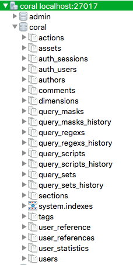

Xenia
Xenia is a configurable service layer that publishes endpoints against MongoDB aggregation pipeline queries.
Aggregation pipelines are chainable, allowing for the output of one endpoint to be fed into the next. Xenia provides a request syntax to allow for this, giving the requesting application an added dimension of flexibility via query control.
Similarly, output documents from multiple pipelines can be bundled together. This is particularly useful in the noSQL/document database paradigm, in which joins are not natively supported.
Straightforward query creation
Xenia moves the query logic out of the application code. Front end developers, data analysts, and anyone else familiar with the simple, declarative MongoDB aggregation syntax can adjust the data requests, and create or update endpoints.
Xenia Installation
Xenia is a configurable service layer that publishes endpoints against MongoDB aggregation pipeline queries.
Before you begin
Before you install Xenia, you will want to have the following installed.
MongoDB
You can find instructions on installing MongoDB on the MongoDB website.
There are instructions on importing sample comment data into MongoDB here
Go
If you want to install from source, you will need to have Go installed.
You can install install Go from their website. The installation and setup instructions on the Go website are quite good. Ensure that you have exported your $GOPATH environment variable, as detailed in the installation instructions.
If you are not on a version of Go that is 1.7 or higher, you will also have to set the GO15VENDOREXPERIMENT flag.
export GO15VENDOREXPERIMENT=1
If you are not on a version of Go 1.7 or higher, we recommend adding this to your ~/.bash_profile or other startup script.
Obtaining the source code
You can install the source code via using the go get command, or by manually cloning the code.
Using the go get command
go get github.com/coralproject/xenia
If you see a message about “no buildable Go source files” like the below, you can ignore it. It simply means that there are buildable source files in subdirectories, just not the uppermost xenia directory.
package github.com/coralproject/xenia: no buildable Go source files in [directory]
Cloning manually
You can also clone the code manually.
mkdir $GOPATH/src/github.com/coralproject/xenia
cd $GOPATH/src/github.com/coralproject/xenia
git clone git@github.com:CoralProject/xenia.git
Set up your environment variables
This tells Xenia which database you want to use, sets your port, and sets your database password.
Make your own copy of the config/dev.cfg file (this edited cfg file will contain your own values for things like your database password, and will not be committed back to the repository if you are doing development work on Xenia). Call your config file whatever you like; we’ll call it “custom” in this example.
cd $GOPATH/src/github.com/coralproject/xenia
cp config/dev.cfg config/custom.cfg
Edit the environment variables to reflect your MongoDB setup. Remember, you’re entering your password here, so be sure not to commit this file to the repository!
export XENIA_MONGO_HOST=localhost:27017
export XENIA_MONGO_USER=coral-user
export XENIA_MONGO_AUTHDB=coral
export XENIA_MONGO_DB=coral
export XENIA_LOGGING_LEVEL=1
export XENIA_HOST=:4000
# Use to have the CLI tooling hit the web service.
export XENIA_WEB_HOST=
export XENIA_WEB_AUTH=
# Set host to Anvil if configured.
# export XENIA_ANVIL_HOST=https://HOST
# Use to apply extra key:value pairs to the header
# export XENIA_HEADERS=key:value,key:value
# DO NOT PUSH TO REPO
export XENIA_MONGO_PASS=
Required edits:
XENIA_MONGO_HOST: set to your MongoDB where you will be communicating with.- If you are running MongoDB locally on your machine, you should set this to
localhost:27017. - If you are pointing to a MongoDB running on a server somewhere, set this to the IP address and port of your MongoDB.
- If you are running MongoDB locally on your machine, you should set this to
XENIA_MONGO_DB: the database you are running queries against (coral).XENIA_MONGO_USER: your MongoDB username.XENIA_MONGO_PASS: the password for your MongoDB user.XENIA_MONGO_AUTHDB: the database you are authenticating against (in most cases, should be the samecoraldatabase as XENIA_MONGO_DB).
Optional edits:
XENIA_WEB_HOST: this is required for the CLI tool. It is the address of the Xenia web service (i.e., an instance of Xenia that you are running on a server).- If you are running everything locally, comment this variable out. This means that the CLI tool will connect directly to your local database, instead of connecting to a running web service.
XENIA_HOST: default is:4000if this variable is not set.XENIA_LOGGING_LEVEL: default is2if this variable is not set.XENIA_WEB_AUTH: your Anvil token, if you have Anvil authentication set up. If you do not have authentication set up, leave this commented out.XENIA_ANVIL_HOST: the URL to the Anvil host, if you have Anvil authentication set up. If you do not have authentication set up, leave this commented out.XENIA_HEADERS: leave this commented out.
Once you’ve finished editing, source your config file using the source command:
source $GOPATH/src/github.com/coralproject/xenia/config/custom.cfg
Build the CLI tool
Xenia has a CLI tool that allows you to manage endpoints and perform other actions.
To build to the tool:
cd $GOPATH/src/github.com/coralproject/xenia/cmd/xenia
go build
Note: It is best to run with logging level 0 when using the xenia command:
export XENIA_LOGGING_LEVEL=0
Creating a Xenia database for the first time
If you are running Xenia on a MongoDB database for the first time you will need the Xenia command line tool to set up the MongoDB for use with Xenia. The CLI tool will create collections and sets of indexes that you can use to execute queries: a sort of dictionary of pre-made queries for you to use.
1) First cd into cmd/xenia directory (this contains the CLI tool):
cd $GOPATH/src/github.com/coralproject/xenia/cmd/xenia
2) Configure the database using db create. The database.json file contains the information necessary to create the collections and indexes.
./xenia db create -f scrdb/database.json
Expected output:
Configuring MongoDB
Creating collection query_sets
Creating collection query_sets_history
Creating collection query_scripts
Creating collection query_scripts_history
Creating collection query_masks
Creating collection query_masks_history
Creating collection query_regexs
Creating collection query_regexs_history
Troubleshooting note #1
If you get a response that contains ERROR: Invalid DB provided, you may have an incorrectly set environment variable. If you are running everything locally and using a local MongoDB, use printev to see if XENIA_WEB_HOST is set:
printenv XENIA_WEB_HOST
If you are using a local MongoDB, this should not return a value. If it does return a value, unset the variable using unset, and then try step 2 again:
unset XENIA_WEB_HOST
Troubleshooting note #2
Instead of the expected output shown above, you may see something like:
Configuring MongoDB
Creating collection query_sets
ERROR: collection already exists
That’s okay! It means that your database is already set up with Xenia. Perhaps you imported data that already had configured collections set up. Continue on to step 3.
3) Load all the existing queries:
./xenia query upsert -p scrquery
Expected output:
Configuring MongoDB
Upserting Set : Path[scrquery]
Upserting Set : Upserted
4) Load all the existing masks:
./xenia mask upsert -p scrmask
Expected output:
Configuring MongoDB
Upserting Set : Path[scrquery]
Upserting Set : Upserted
5) Load all the existing regexes:
./xenia regex upsert -p scrregex
Expected output:
Configuring MongoDB
Upserting Regex : Path[scrregex]
Upserting Regex : Upserted
6) That’s it! If you are using MongoChef, you should be able to see your newly created collections, which will look something like this:

Run the web service
1) First cd into the directory containing the web service, xeniad (the Xenia daemon):
cd $GOPATH/src/github.com/coralproject/xenia/cmd/xeniad
2) Build the Xenia web service:
go build
3) Run the web service:
./xeniad
Expected output:
2016/06/08 10:26:38 app.go:173: USER : startup : Init :
Config Settings:
MONGO_USER=coral-user
MONGO_AUTHDB=coral
MONGO_DB=coral
HOST=:4000
LOGGING_LEVEL=1
MONGO_HOST=localhost:27017
2016/06/08 10:26:38 main.go:24: USER : startup : Init : Revision : "<unknown>"
2016/06/08 10:26:38 main.go:25: USER : startup : Init : Version : "<unknown>"
2016/06/08 10:26:38 main.go:26: USER : startup : Init : Build Date : "<unknown>"
2016/06/08 10:26:38 main.go:27: USER : startup : Init : Int Version : "201606081030"
2016/06/08 10:26:38 main.go:28: USER : startup : Init : Go Version : "go1.6.2"
2016/06/08 10:26:38 main.go:29: USER : startup : Init : Go Compiler : "gc"
2016/06/08 10:26:38 main.go:30: USER : startup : Init : Go ARCH : "amd64"
2016/06/08 10:26:38 main.go:31: USER : startup : Init : Go OS : "darwin"
4) You can test your web service by going to the following URL in your browser: http://localhost:4000/1.0/query.
In your browser, you will see some json displayed. In your terminal, you should see something like:
2016/06/08 13:30:58 app.go:104: USER : 6bd28905-8a92-4aa9-80fd-5e9cff199b3e : Request : Started : Method[GET] URL[/1.0/query] RADDR[[::1]:62121]
2016/06/08 13:30:58 context.go:65: USER : 6bd28905-8a92-4aa9-80fd-5e9cff199b3e : api : Respond : Started : Code[200]
2016/06/08 13:30:58 context.go:72: USER : startup : api : Respond : Setting user headers : Access-Control-Allow-Origin:*
2016/06/08 13:30:58 context.go:110: USER : 6bd28905-8a92-4aa9-80fd-5e9cff199b3e : api : Respond : Completed
2016/06/08 13:30:58 app.go:126: USER : 6bd28905-8a92-4aa9-80fd-5e9cff199b3e : Request : Completed : Status[200] Duration[46.497305ms]
Troubleshooting
Authorization
Xenia API
This section is under construction, and is not currently complete.
Endpoints
If you set the authorization header properly in your browser (TODO) you can run the following endpoints.
| URL | HTTP Verb | Description |
|---|---|---|
| /1.0/query | GET | Get a list of configured queries |
| /1.0/query/basic | GET | Get the query set document for the basic query set |
| /1.0/exec/basic | GET | Execute the query for the basic query set |
| /1.0/exec/basic_var | GET | Execute the query for the basic_var query set with variables |
| /1.0/exec | POST | Execute a dynamic query set |
Get a list of configured queries
| URL | HTTP Verb | Functionality |
|---|---|---|
| /1.0/query | GET | Get a list of configured queries |
Parameters
None
Example call
GET
http://localhost:4000/1.0/query
Example response
["basic","basic_var","top_commenters_by_count"]
Get the query set document for the basic query set
| URL | HTTP Verb | Functionality |
|---|---|---|
| /1.0/query/basic | GET | Get the query set document for the basic query set |
Parameters
None
Example call
GET
http://localhost:4000/1.0/query/basic
Example response
{
"name":"QTEST_basic",
"desc":"",
"enabled":true,
"params":[],
"queries":[
{
"name":"Basic",
"type":"pipeline",
"collection":"test_xenia_data",
"return":true,
"commands":[
{"$match": {"station_id" : "42021"}},
{"$project": {"_id": 0, "name": 1}}
]
}
]
}
Execute the query for the basic query set
| URL | HTTP Verb | Functionality |
|---|---|---|
| /1.0/query | GET | Execute the query for the basic query set |
Parameters
None
Example call
GET
http://localhost:4000/1.0/exec/basic
set:
{
"name":"basic",
"desc":"",
"enabled":true,
"params":[],
"queries":[
{
"name":"Basic",
"type":"pipeline",
"collection":"test_xenia_data",
"return":true,
"commands":[
{"$match": {"station_id" : "42021"}},
{"$project": {"_id": 0, "name": 1}}
]
}
]
}
Example response
{
"results":[
{
"Name":"basic",
"Docs":[
{
"name":"C14 - Pasco County Buoy, FL"
}
]
}
],
"error":false
}
Execute the query for the basic_var query set with variables
| URL | HTTP Verb | Functionality |
|---|---|---|
| /1.0/exec/basic_var | GET | Execute the query for the basic_var query set with variables |
Parameters
| Name | Required? | Description |
|---|---|---|
| station_id | Y | Tag ID |
GET
http://localhost:4000/1.0/exec/basic_var?station_id=42021
set:
{
"name":"basic_var",
"desc":"",
"enabled":true,
"params":[],
"queries":[
{
"name":"BasicVar",
"type":"pipeline",
"collection":"test_xenia_data",
"return":true,
"commands":[
{"$match": {"station_id" : "#string:station_id"}},
{"$project": {"_id": 0, "name": 1}}
]
}
]
}
output:
{
"results":[
{
"Name":"basic_var",
"Docs":[
{
"name":"C14 - Pasco County Buoy, FL"
}
]
}
],
"error":false
}
5) You can execute a dynamic query set:
POST
http://localhost:4000/1.0/exec
Post Data:
{
"name":"basic",
"desc":"",
"enabled":true,
"params":[],
"queries":[
{
"name":"Basic",
"type":"pipeline",
"collection":"test_xenia_data",
"return":true,
"commands":[
{"$match": {"station_id" : "42021"}},
{"$project": {"_id": 0, "name": 1}}
]
}
]
}
Query management with the command line tool
Using the Xenia command line tool you can manage query sets.
cd $GOPATH/src/github.com/coralproject/xenia/cmd/xenia
Get a list of saved queries:
./xenia query list
output:
basic
basic_var
top_commenters_by_count
Look at the details of a query:
./xenia query get -n basic
output:
{
"name":"basic",
"desc":"",
"enabled":true,
"params":[],
"queries":[
{
"name":"Basic",
"type":"pipeline",
"collection":"test_xenia_data",
"return":true,
"commands":[
{"$match": {"station_id" : "42021"}},
{"$project": {"_id": 0, "name": 1}}
]
}
]
}
Execute a query:
./xenia query exec -n basic
output:
{
"results":[
{
"Name":"basic",
"Docs":[
{
"name":"C14 - Pasco County Buoy, FL"
}
]
}
],
"error":false
}
Add or update a query for use:
./xenia query upsert -p ./scrquery/basic_var.json
output:
Upserting Query : Path[./scrquery/basic_var.json]
By convention, we store core query scripts in the /xenia/cmd/xenia/scrquery folder. As we develop Coral features, store the JSON files there so other developers can use them (eventually, groups of query sets will be refactored to another location, but that’s the right folder for the time being).
cd $GOPATH/src/github.com/coralproject/xenia/cmd/xenia/scrquery
ls
Direct Mongo access (optional)
You can look in the db at existing queries:
mongo [flags to connect to your server]
use coral (or your databasename)
db.query_sets.find()
Writing Sets
“Writing a set” is essentially about creating a MongoDB aggregation pipeline. Xenia has built on top of this by providing extended functionality to make MongoDB more powerful.
Here is a multi query set with variable substitution and date processing:
GET
http://localhost:4000/1.0/exec/basic?station_id=42021
{
"name":"basic",
"desc":"Shows a basic multi result query.",
"enabled":true,
"queries":[
{
"name":"Basic",
"type":"pipeline",
"collection":"test_bill",
"return":true,
"scripts":[
{"$match": {"station_id" : "#station_id#"}},
{"$project": {"_id": 0, "name": 1}}
]
},
{
"name":"Time",
"type":"pipeline",
"collection":"test_bill",
"return":true,
"scripts":[
{"$match": {"condition.date" : {"$gt": "#date:2013-01-01T00:00:00.000Z"}}},
{"$project": {"_id": 0, "name": 1}},
{"$limit": 2}
]
}
]
}
Here is the list of commands that exist for variable substitution.
{"field": "#cmd:variable"}
// Basic commands.
Before: {"field": "#number:variable_name"} After: {"field": 1234}
Before: {"field": "#string:variable_name"} After: {"field": "value"}
Before: {"field": "#date:variable_name"} After: {"field": time.Time}
Before: {"field": "#objid:variable_name"} After: {"field": mgo.ObjectId}
Before: {"field": "#regex:/pattern/{options}"} After: {"field": bson.RegEx}
// data command can index into saved results.
Before: {"field" : {"$in": "#data.*:list.station_id"}}} After: [{"station_id":"42021"}]
Before: {"field": "#data.0:doc.station_id"} After: {"field": "23453"}
// time command manipulates the current time.
Before: {"field": #time:0} After: {"field": time.Time(Current Time)}
Before: {"field": #time:-3600} After: {"field": time.Time(3600 seconds in the past)}
Before: {"field": #time:3m} After: {"field": time.Time(3 minutes in the future)}
Possible duration types. Default is seconds if not provided.
"ns": Nanosecond
"us": Microsecond
"ms": Millisecond
"s" : Second
"m" : Minute
"h" : Hour
You can save the result of one query for later use by the next.
GET
http://localhost:4000/1.0/exec/basic_save
{
"name":"basic_save",
"desc":"",
"enabled":true,
"params":[],
"queries":[
{
"name":"get_id_list",
"desc": "Get the list of id's",
"type":"pipeline",
"collection":"test_xenia_data",
"return":false,
"commands":[
{"$project": {"_id": 0, "station_id": 1}},
{"$limit": 5}
{"$save": {"$map": "list"}}
]
},
{
"name":"retrieve_stations",
"desc": "Retrieve the list of stations",
"type":"pipeline",
"collection":"test_xenia_data",
"return":true,
"commands":[
{"$match": {"station_id" : {"$in": "#data.*:list.station_id"}}},
{"$project": {"_id": 0, "name": 1}},
]
}
]
}
The $save command is an Xenia extension and currently only $map is supported.
{"$save": {"$map": "list"}}
The result will be saved in a map under the name list.
The second query is using the #data command. The data command has two options. Use can use #data.* or #data.Idx.
Use the * operator when you need an array. In this example we need to support an $in command:
{
"name":"retrieve_stations",
"desc": "Retrieve the list of stations",
"type":"pipeline",
"collection":"test_xenia_data",
"return":true,
"commands":[
{"$match": {"station_id" : {"$in": "#data.*:list.station_id"}}},
{"$project": {"_id": 0, "name": 1}},
]
}
When you need an array to be substituted.
Before: {"field" : {"$in": "#data.*:list.station_id"}}}
After : {"field" : {"$in": ["42021"]}}
dataOp : "*"
lookup : "list.station_id"
results: {"list": [{"station_id":"42021"}]}
Use the index operator when you need a single value. Specify which document in the array of documents you want to select:
{
"name":"retrieve_stations",
"desc": "Retrieve the list of stations",
"type":"pipeline",
"collection":"test_xenia_data",
"return":true,
"commands":[
{"$match": {"station_id" : "#data.0:list.station_id"}},
{"$project": {"_id": 0, "name": 1}},
]
}
When you need a single value to be substituted, select an index.
Before: {"field" : "#data.0:list.station_id"}
After : {"field" : "42021"}
dataOp : 0
lookup : "list.station_id"
results: {"list": [{"station_id":"42021"}, {"station_id":"23567"}]}
You can also replace field names in the query commands.
Variables
{
"cond": "condition",
"dt": "date"
}
Query Set
{
"name":"basic",
"desc":"Shows field substitution.",
"enabled":true,
"queries":[
{
"name":"Time",
"type":"pipeline",
"collection":"test_bill",
"return":true,
"scripts":[
{"$match": {"{cond}.{dt}" : {"$gt": "#date:2013-01-01T00:00:00.000Z"}}},
{"$project": {"_id": 0, "name": 1}},
{"$limit": 2}
]
}
]
}
Testing
You can run tests in the app and pkg folder.
If you plan to run tests in parallel, use this command:
go test -cpu 1 ./...
You can always run individual tests in each package using simply:
go test
Do not run tests in the vendor folder.